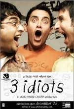
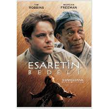

| 1 |
 |
3 Aptal |
3 Idiots, 2009 yapımı bir Bollywood filmidir. Film Hindistan'ın en iyi mühendislik okulundaki üç
arkadaşın dostluklarını ve hayatını anlatırken eğitim sistemini eleştirmektedir. |
Komedi |
3 aptal |
| 2 |
 |
Esaretin Bedeli |
Stephen King'in Rita Hayworth ve Shawshank'in Kefareti adlı novellasından uyarlanan film,
masumiyetini iddia
etmesine rağmen karısını ve sevgilisini öldürdüğü gerekçesiyle Shawshank Devlet Cezaevi'nde yaklaşık
20 yılını
geçiren bankacı Andy Dufresne'in hikâyesini anlatır. Cezaevinde kaldığı süre boyunca diğer
mahkûmlardan Ellis
Boyd "Red" Redding ile arkadaşlık kuran Dufresne, cezaevi müdürünün para aklama faaliyetlerine
yardım etmeye
başladıktan sonra gardiyanlar tarafından korunmaya başlanır. |
Dram |
Esaretin Bedeli |
| 3 |
 |
Yeşil Yol |
Oldukça iri bir adam olan John Coffey, iki küçük kızı tecavüz ederek öldürmek suçundan idama mahkûm
olmuştur.
Ürkütücü görünümünün aksine oldukça ince ve karmaşık bir iç dünyası olan John Coffey, bazı doğaüstü
güçlere
sahiptir. İdam cezası alan mahkûmların bulunduğu hapishanenin infaz odası baş gardiyanı olan Paul
Edgecomb'un
ona gerçekten suçlu olup olmadığını sorması ile birlikte ikisinin arasında bir diyalog başlar. |
Dram |
Yeşil Yol |